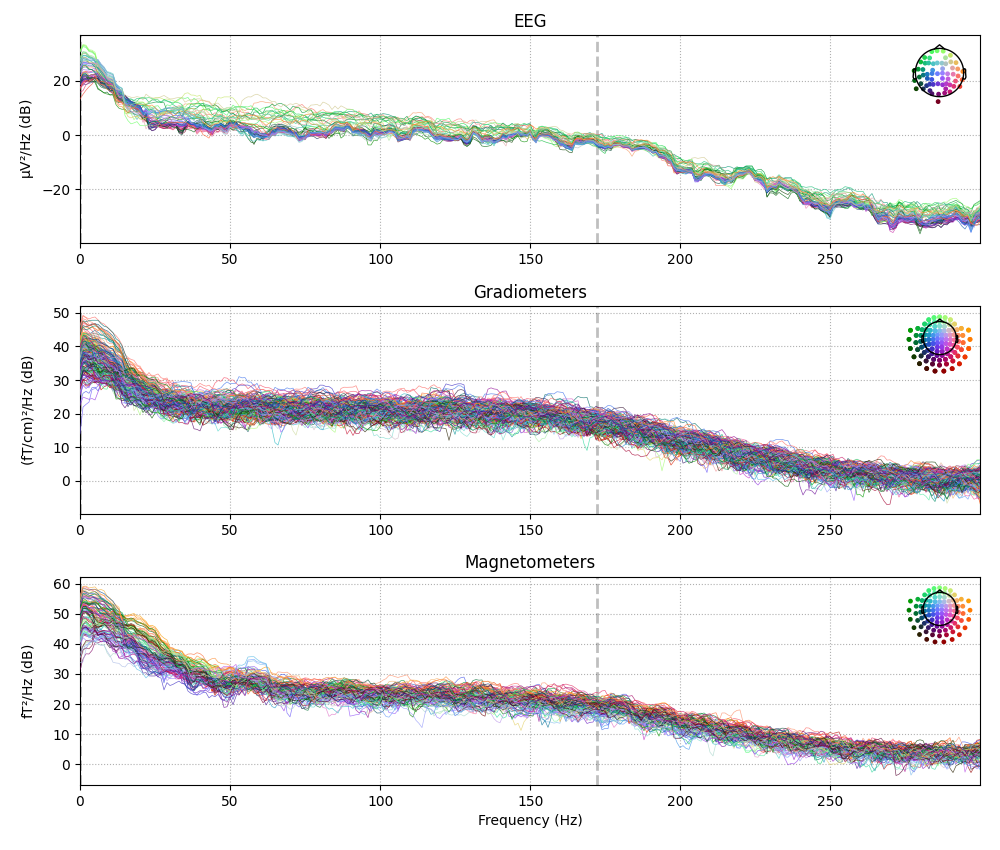
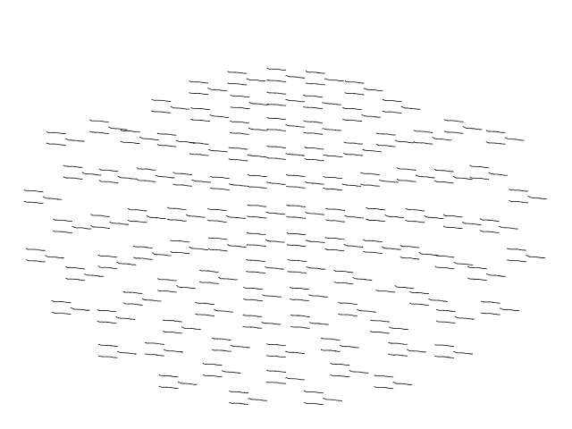

Note
Go to the end to download the full example code
The Spectrum and EpochsSpectrum classes: frequency-domain data#
This tutorial shows how to create and visualize frequency-domain
representations of your data, starting from continuous Raw,
discontinuous Epochs, or averaged Evoked data.
As usual we’ll start by importing the modules we need, and loading our sample dataset:
import numpy as np
import mne
sample_data_folder = mne.datasets.sample.data_path()
sample_data_raw_file = (sample_data_folder / 'MEG' / 'sample' /
'sample_audvis_raw.fif')
raw = mne.io.read_raw_fif(sample_data_raw_file, verbose=False).crop(tmax=60)
All three sensor-space containers (Raw,
Epochs, and Evoked) have a
compute_psd() method with the same options.
Effective window size : 0.426 (s)
By default, the spectral estimation method will be the
Welch[1] method for continuous data, and the multitaper
method [2] for epoched or averaged data. This default can
be overridden by passing method='welch' or method='multitaper' to the
compute_psd() method.
There are many other options available as well; for example we can compute a spectrum from a given span of times, for a chosen frequency range, and for a subset of the available channels:
raw.compute_psd(method='multitaper', tmin=10, tmax=20, fmin=5, fmax=30,
picks='eeg')
Using multitaper spectrum estimation with 7 DPSS windows
You can also pass some parameters to the underlying spectral estimation
function, such as the FFT window length and overlap for the Welch method; see
the docstrings of mne.time_frequency.Spectrum (esp. its
method_kw parameter) and the spectral estimation functions
psd_array_welch() and
psd_array_multitaper() for details.
For epoched data, the class of the spectral estimate will be
mne.time_frequency.EpochsSpectrum instead of
mne.time_frequency.Spectrum, but most of the API is the same for the
two classes. For example, both have a
get_data() method with an option to
return the bin frequencies:
with mne.use_log_level('WARNING'): # hide some irrelevant info messages
events = mne.find_events(raw, stim_channel='STI 014')
event_dict = {'auditory/left': 1, 'auditory/right': 2, 'visual/left': 3,
'visual/right': 4}
epochs = mne.Epochs(raw, events, tmin=-0.3, tmax=0.7, event_id=event_dict,
preload=True)
epo_spectrum = epochs.compute_psd()
psds, freqs = epo_spectrum.get_data(return_freqs=True)
print(f'\nPSDs shape: {psds.shape}, freqs shape: {freqs.shape}')
epo_spectrum
Using multitaper spectrum estimation with 7 DPSS windows
PSDs shape: (77, 364, 301), freqs shape: (301,)
Additionally, both Spectrum and
EpochsSpectrum have __getitem__ methods,
meaning their data can be accessed by square-bracket indexing. For
Spectrum objects (computed from
Raw or Evoked data), the indexing works
similar to a Raw object or a
NumPy array:
evoked = epochs['auditory'].average()
evk_spectrum = evoked.compute_psd()
# the first 3 frequency bins for the first 4 channels:
print(evk_spectrum[:4, :3])
Using multitaper spectrum estimation with 7 DPSS windows
[[5.62205637e-23 1.13776542e-22 9.90850735e-23]
[2.89161828e-23 4.24201617e-23 3.93085560e-23]
[1.57011939e-25 2.66195154e-25 2.39526016e-25]
[5.38954376e-23 1.03998988e-22 9.98139252e-23]]
In contrast, the EpochsSpectrum has indexing
similar to Epochs objects: you can use string values to select
spectral estimates for specific epochs based on their condition names, and
what you get back is a new instance of
EpochsSpectrum rather than a
NumPy array of the data values. Selection via
hierarchical event descriptors (HEDs) is also possible:
# get both "visual/left" and "visual/right" epochs:
epo_spectrum['visual']
Visualizing Spectrum objects#
Both Spectrum and
EpochsSpectrum objects have plotting methods
plot() (frequency × power),
plot_topo() (frequency × power separately
for each sensor), and plot_topomap()
(interpolated scalp topography of power, in specific frequency bands). A few
plot options are demonstrated below; see the docstrings for full details.
evk_spectrum.plot()
evk_spectrum.plot_topo(color='k', fig_facecolor='w', axis_facecolor='w')
- 
- 
evk_spectrum.plot_topomap(ch_type='eeg', agg_fun=np.median)
Migrating legacy code#
Below is a quick-reference table of equivalent code from before and after the
introduction of the Spectrum and
EpochsSpectrum classes.
Old |
New |
|---|---|
|
|
|
|
|
|
|
|
|
|
Warning
The functions mne.time_frequency.psd_welch() and
mne.time_frequency.psd_multitaper() have been deprecated; new code
should use the Raw.compute_psd(),
Epochs.compute_psd(), and
Evoked.compute_psd() methods, and pass
method='welch' or method='multitaper' as a parameter.
The class methods Raw.plot_psd(),
Epochs.plot_psd(),
Raw.plot_psd_topo(), and
Epochs.plot_psd_topomap() have been
kept in the API to support legacy code, but should be avoided when writing
new code.
References#
Total running time of the script: ( 0 minutes 18.723 seconds)
Estimated memory usage: 9 MB